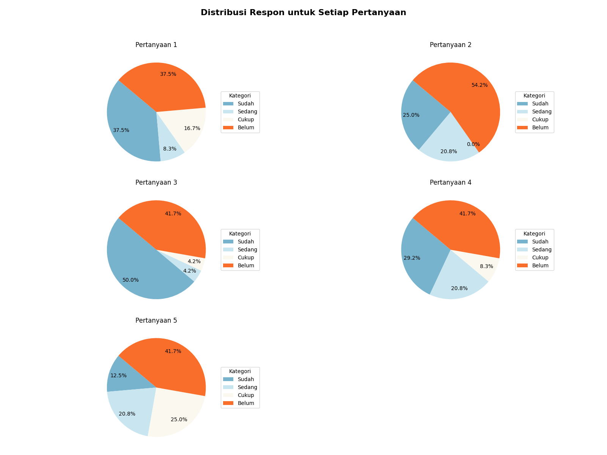
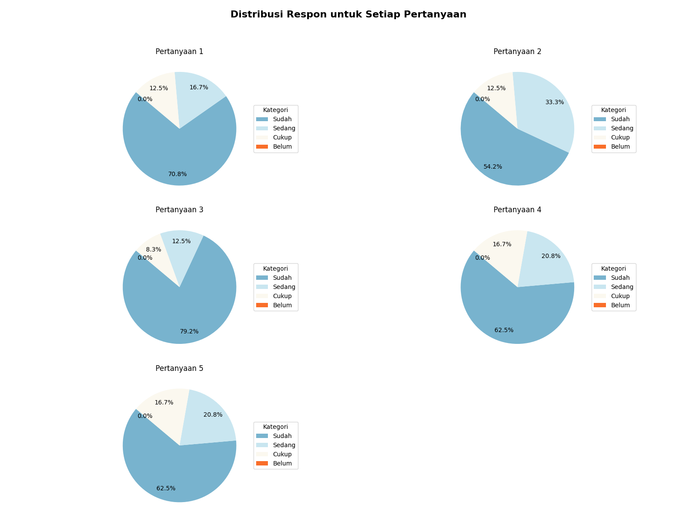

Pra Kegiatan
Pertanyaan
- Apakah kamu sudah memiliki bayangan mengenai hobi atau minat yang ingin kamu kembangkan?
- Apakah kamu sudah memiliki bayangan cara mengembangkan hobi dan minat kamu?
- Apakah kamu sudah merasa paham tentang pentingnya menjaga kebersihan lingkungan?
- Apakah kamu sudah menerapkan tindakan untuk menjaga kebersihan lingkungan?
- Seberapa percaya dirikah kamu untuk belajar menggunakan aplikasi desain seperti Canva?
Visualisasi Data

Kesimpulan
- Pada pertanyaan tentang bayangan hobi/minat, sebanyak 37.5% menjawab sudah sedangkan yang lainnya masih ragu-ragu.
- Pada pertanyaan tentang cara mengembangkan hobi/minat, siswa paling banyak menjawab belum.
- Pada pertanyaan tentang pemahaman pentingnya menjaga kebersihan, siswa paling banyak menjawab sudah.
- Pada pertanyaan tentang tindakan menjaga kebersihan, siswa paling banyak menjawab belum.
- Pada pertanyaan tentang kepercayaan diri menggunakan Canva, siswa paling banyak menjawab belum.
After Kegiatan
Pertanyaan
- Apakah kegiatan ini membantu kamu lebih mengenal hobi atau minat kamu?
- Apakah kamu sudah memiliki bayangan cara mengembangkan hobi dan minat kamu?
- Apakah kamu merasa lebih paham mengenai pentingnya menjaga kebersihan setelah mengikuti kegiatan ini?
- Seberapa nyaman kamu sekarang dalam menggunakan aplikasi desain seperti Canva?
- Apakah kegiatan mewarnai atau menghias membuat kamu lebih kreatif?
Visualisasi Data

Kesimpulan
- Pada pertanyaan tentang pengenalan hobi/minat, siswa paling banyak menjawab sudah.
- Pada pertanyaan tentang cara mengembangkan hobi/minat, siswa paling banyak menjawab sudah.
- Pada pertanyaan tentang pemahaman pentingnya menjaga kebersihan, siswa paling banyak menjawab sudah.
- Pada pertanyaan tentang kenyamanan menggunakan Canva, siswa paling banyak menjawab sudah.
- Pada pertanyaan tentang kreativitas melalui kegiatan, siswa paling banyak menjawab sudah.